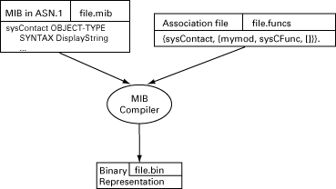
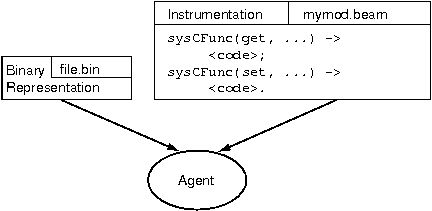
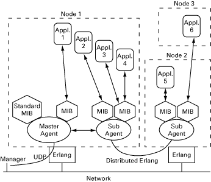

Agent Functional Description
The SNMP agent system consists of one Master Agent and optional Sub-agents.
The tool makes it easy to dynamically extend an SNMP agent in run-time. MIBs can be loaded and unloaded at any time. It is also easy to change the implementation of an MIB in run-time, without having to recompile the MIB. The MIB implementation is clearly separated from the agent.
To facilitate incremental MIB implementation, the tool can generate a prototype implementation for a whole MIB, or parts thereof. This allows different MIBs and management applications to be developed at the same time.
Features
features To implement an agent, the programmer writes instrumentation functions for the variables and the tables in the MIBs that the agent is going to support. A running prototype which handles set , get , and get-next can be created without any programming.
The toolkit provides the following:
- multi-lingual multi-threaded extensible SNMP agent
- easy writing of instrumentation functions with a high-level programming language
- basic fault handling such as automatic type checking
- access control
- authentication
- privacy through encryption
- loading and unloading of MIBs in run-time
- the ability to change instrumentation functions without recompiling the MIB
- rapid prototyping environment where the MIB compiler can use generic instrumentation functions, which later can be refined by the programmer
- a simple and extensible model for transaction handling and consistency checking of set-requests
- support of the sub-agent concept via distributed Erlang
- a mechanism for sending notifications (traps and informs)
- support for implementing SNMP tables in the Mnesia DBMS.
SNMPv1, SNMPv2 and SNMPv3
versions The SNMP development toolkit works with all three versions of Standard Internet Management Framework; SNMPv1, SNMPv2 and SNMPv3. They all share the same basic structure and components. And they follow the same architecture.
The versions are defined in following RFCs
- SNMPv1 RFC 1555, 1157 1212, 1213 and 1215
- SNMPv2 RFC 1902 - 1907
- SNMPv3 RFC 2570 - 2575
Over time, as the Framework has evolved from SNMPv1 , through SNMPv2, to SNMPv3 the definitions of each of these architectural components have become richer and more clearly defined, but the fundamental architecture has remained consistent.
The main features of SNMPv2 compared to SNMPv1 are:
- The get-bulk operation for transferring large amounts of data.
- Enhanced error codes.
- A more precise language for MIB specification
The standard documents that define SNMPv2 are incomplete, in the sense that they do not specify how an SNMPv2 message looks like. The message format and security issues are left to a special Administrative Framework. One such framework is the Community-based SNMPv2 Framework (SNMPv2c), which uses the same message format and framework as SNMPv1. Other experimental frameworks as exist, e.g. SNMPv2u and SNMPv2*.
The SNMPv3 specifications take a modular approach to SNMP. All modules are separated from each other, and can be extended or replaced individually. Examples of modules are Message definition, Security and Access Control. The main features of SNMPv3 are:
- Encryption and authentication is added.
- MIBs for agent configuration are defined.
All these specifications are commonly referred to as "SNMPv3", but it is actually only the Message module, which defines a new message format, and Security module, which takes care of encryption and authentication, that cannot be used with SNMPv1 or SNMPv2c. In this version of the agent toolkit, all the standard MIBs for agent configuration are used. This includes MIBs for definition of management targets for notifications. These MIBs are used regardless of which SNMP version the agent is configured to use.
The extensible agent in this toolkit understands the SNMPv1, SNMPv2c and SNMPv3. Recall that SNMP consists of two separate parts, the MIB definition language (SMI), and the protocol. On the protocol level, the agent can be configured to speak v1, v2c, v3 or any combination of them at the same time, i.e. a v1 request gets an v1 reply, a v2c request gets a v2c reply, and a v3 request gets a v3 reply. On the MIB level, the MIB compiler can compile both SMIv1 and SMIv2 MIBs. Once compiled, any of the formats can be loaded into the agent, regardless of which protocol version the agent is configured to use. This means that the agent translates from v2 notifications to v1 traps, and vice versa. For example, v2 MIBs can be loaded into an agent that speaks v1 only. The procedures for the translation between the two protocols are described in RFC 1908 and RFC 2089.
In order for an implementation to make full use of the enhanced SNMPv2 error codes, it is essential that the instrumentation functions always return SNMPv2 error codes, in case of error. These are translated into the corresponding SNMPv1 error codes by the agent, if necessary.
Note
The translation from an SMIv1 MIB to an SNMPv2c or SNMPv3 reply is always very straightforward, but the translation from a v2 MIB to a v1 reply is somewhat more complicated. There is one data type in SMIv2, called Counter64 , that an SNMPv1 manager cannot decode correctly. Therefore, an agent may never send a Counter64 object to an SNMPv1 manager. The common practice in these situations is to simple ignore any Counter64 objects, when sending a reply or a trap to an SNMPv1 manager. For example, if an SNMPv1 manager tries to GET an object of type Counter64 , he will get a noSuchName error, while an SNMPv2 manager would get a correct value.
Operation
operations The following steps are needed to get a running agent:
- Write your MIB in SMI in a text file.
- Write the instrumentation functions in Erlang and compile them.
- Put their names in the association file.
- Run the MIB together with the association file through the MIB compiler.
- Configure the application (agent).
- Start the application (agent).
- Load the compiled MIB into the agent.
The figures in this section illustrate the steps involved in the development of an SNMP agent. image-1  The compiler parses the SMI file and associates each table or variable with an instrumentation function (see the figure MIB Compiler Principles ). The actual instrumentation functions are not needed at MIB compile time, only their names.
The binary output file produced by the compiler is read by the agent at MIB load time (see the figure Starting the Agent ). The instrumentation is ordinary Erlang code which is loaded explicitly or automatically the first time it is called. image-2  The SNMP agent system consists of one Master Agent and optional sub-agents. The Master Agent can be seen as a special kind of sub-agent. It implements the core agent functionality, UDP packet processing, type checking, access control, trap distribution, and so on. From a user perspective, it is used as an ordinary sub-agent.
Sub-agents are only needed if your application requires special support for distribution from the SNMP toolkit. A sub-agent can also be used if the application requires a more complex set transaction scheme than is found in the master agent.
The following illustration shows how a system can look in runtime. snmp_ch2_fig3  A typical operation could include the following steps:
- The Manager sends a request to the Agent.
- The Master Agent decodes the incoming UDP packet.
- The Master Agent determines which items in the request that should be processed here and which items should be forwarded to its subagent.
- Step 3 is repeated by all subagents.
- Each sub-agent calls the instrumentation for its loaded MIBs.
- The results of calling the instrumentation are propagated back to the Master Agent.
- The answer to the request is encoded to a UDP Protocol Data Unit (PDU).
The sequence of steps shown is probably more complex than normal, but it illustrates the amount of functionality which is available. The following points should be noted:
- An agent can have many MIBs loaded at the same time.
- Sub-agents can also have sub-agents. Each sub-agent can have an arbitrary number of child sub-agents registered, forming a hierarchy.
- One MIB can communicate with many applications.
- Instrumentation can use Distributed Erlang to communicate with an application.
Most applications only need the Master Agent because an agent can have multiple MIBs loaded at the same time.
Sub-agents and MIB Loading
sub_agent_mib_loading Since applications tend to be transient (they are dynamically loaded and unloaded), the management of these applications must be dynamic as well. For example, if we have an equipment MIB for a rack and different MIBs for boards, which can be installed in the rack, the MIB for a card should be loaded when the card is inserted, and unloaded when the card is removed.
In this agent system, there are two ways to dynamically install management information. The most common way is to load an MIB into an agent. The other way is to use a sub-agent, which is controlled by the application and is able to register and unregister itself. A sub-agent can register itself for managing a sub-tree (not to be mixed up with erlang:register ). The sub-tree is identified by an Object Identifier. When a sub-agent is registered, it receives all requests for this particular sub-tree and it is responsible for answering them. It should also be noted that a sub-agent can be started and stopped at any time.
Compared to other SNMP agent packages, there is a significant difference in this way of using sub-agents. Other packages normally use sub-agents to load and unload MIBs in run-time. In Erlang, it is easy to load code in run-time and it is possible to load an MIB into an existing sub-agent. It is not necessary to create a new process for handling a new MIB.
Sub-agents are used for the following reasons:
- to provide a more complex set-transaction scheme than master agent
- to avoid unnecessary process communication
- to provide a more lightweight mechanism for loading and unloading MIBs in run-time
- to provide interaction with other SNMP agent toolkits.
Refer to the chapter Advanced Agent Topics in this User's Guide for more information about these topics.
The communication protocol between sub-agents is the normal message passing which is used in distributed Erlang systems. This implies that sub-agent communication is very efficient compared to SMUX, DPI, AgentX, and similar protocols.
Contexts and Communities
context_and_communities A context is a collection of management information accessible by an SNMP entity. An instance of a management object may exist in more than one context. An SNMP entity potentially has access to many contexts.
Each managed object can exist in many instances within a SNMP entity. To identify the instances, specified by an MIB module, a method to distinguish the actual instance by its 'scope' or context is used. Often the context is a physical or a logical device. It can include multiple devices, a subset of a single device or a subset of multiple devices, but the context is always defined as a subset of a single SNMP entity. To be able to identify a specific item of management information within an SNMP entity, the context, the object type and its instance must be used.
For example, the managed object type ifDescr from RFC1573, is defined as the description of a network interface. To identify the description of device-X's first network interface, four pieces of information are needed: the snmpEngineID of the SNMP entity which provides access to the management information at device-X, the contextName (device-X), the managed object type ( ifDescr ), and the instance ("1").
In SNMPv1 and SNMPv2c, the community string in the message was used for (at least) three different purposes:
- to identify the context
- to provide authentication
- to identify a set of trap targets
In SNMPv3, each of these usage areas has its own unique mechanism. A context is identified by the name of the SNMP entity, contextEngineID , and the name of the context, contextName . Each SNMPv3 message contains values for these two parameters.
There is a MIB, SNMP-COMMUNITY-MIB, which maps a community string to a contextEngineID and contextName . Thus, each message, an SNMPv1, SNMPv2c or an SNMPv3 message, always uniquely identifies a context.
For an agent, the contextEngineID identified by a received message, is always equal to the snmpEngineID of the agent. Otherwise, the message was not intended for the agent. If the agent is configured with more than one context, the instrumentation code must be able to figure out for which context the request was intended. There is a function snmpa:current_context/0 provided for this purpose.
By default, the agent has no knowledge of any other contexts than the default context, "" . If it is to support more contexts, these must be explicitly added, by using an appropriate configuration file Agent Configuration Files .
Management of the Agent
management There is a set of standard MIBs, which are used to control and configure an SNMP agent. All of these MIBs, with the exception of the optional SNMP-PROXY-MIB (which is only used for proxy agents), are implemented in this agent. Further, it is configurable which of these MIBs are actually loaded, and thus made visible to SNMP managers. For example, in a non-secure environment, it might be a good idea to not make MIBs that define access control visible. Note, the data the MIBs define is used internally in the agent, even if the MIBs not are loaded. This chapter describes these standard MIBs, and some aspects of their implementation.
Any SNMP agent must implement the system group and the snmp group, defined in MIB-II. The definitions of these groups have changed from SNMPv1 to SNMPv2. MIBs and implementations for both of these versions are Provided in the distribution. The MIB file for SNMPv1 is called STANDARD-MIB, and the corresponding for SNMPv2 is called SNMPv2-MIB. If the agent is configured for SNMPv1 only, the STANDARD-MIB is loaded by default; otherwise, the SNMPv2-MIB is loaded by default. It is possible to override this default behavior, by explicitly loading another version of this MIB, for example, you could choose to implement the union of all objects in these two MIBs.
An SNMPv3 agent must implement the SNMP-FRAMEWORK-MIB and SNMP-MPD-MIB. These MIBs are loaded by default, if the agent is configured for SNMPv3. These MIBs can be loaded for other versions as well.
There are five other standard MIBs, which also may be loaded into the agent. These MIBs are:
- SNMP-TARGET-MIB and SNMP-NOTIFICATION-MIB, which defines managed objects for configuration of management targets, i.e. receivers of notifications (traps and informs). These MIBs can be used with any SNMP version.
- SNMP-VIEW-BASED-ACM-MIB, which defined managed objects for access control. This MIB can be used with any SNMP version.
- SNMP-COMMUNITY-MIB, which defines managed objects for coexistence of SNMPv1 and SNMPv2c with SNMPv3. This MIB is only useful if SNMPv1 or SNMPv2c is used, possibly in combination with SNMPv3.
- SNMP-USER-BASED-SM-MIB, which defines managed objects for authentication and privacy. This MIB is only useful with SNMPv3.
All of these MIBs should be loaded into the Master Agent. Once loaded, these MIBs are always available in all contexts.
The ASN.1 code, the Erlang source code, and the generated .hrl files for them are provided in the distribution and are placed in the directories mibs , src , and include , respectively, in the snmp application.
The .hrl files are generated with snmpc:mib_to_hrl/1 . Include these files in your code as in the following example:
-include_lib("snmp/include/SNMPv2-MIB.hrl").
The initial values for the managed objects defined in these tables, are read at start-up from a set of configuration files. These are described in Configuration Files .
STANDARD-MIB and SNMPv2-MIB
These MIBs contain the snmp- and system groups from MIB-II which is defined in RFC1213 (STANDARD-MIB) or RFC1907 (SNMPv2-MIB). They are implemented in the snmp_standard_mib module. The snmp counters all reside in volatile memory and the system and snmpEnableAuthenTraps variables in persistent memory, using the SNMP built-in database (refer to the Reference Manual, section snmp , module snmpa_local_db for more details).
If another implementation of any of these variables is needed, e.g. to store the persistent variables in a Mnesia database, an own implementation of the variables must be made. That MIB will be compiled and loaded instead of the default MIB. The new compiled MIB must have the same name as the original MIB (i.e. STANDARD-MIB or SNMPv2-MIB), and be located in the SNMP configuration directory (see Configuration Files .)
One of these MIBs is always loaded. If only SNMPv1 is used, STANDARD-MIB is loaded, otherwise SNMPv2-MIB is loaded.
Data Types
There are some new data types in SNMPv2 that are useful in SNMPv1 as well. In the STANDARD-MIB, three data types are defined, RowStatus , TruthValue and DateAndTime . These data types are originally defined as textual conventions in SNMPv2-TC (RFC1903).
SNMP-FRAMEWORK-MIB and SNMP-MPD-MIB
The SNMP-FRAMEWORK-MIB and SNMP-MPD-MIB define additional read-only managed objects, which is used in the generic SNMP framework defined in RFC2271 and the generic message processing and dispatching module defined in RFC2272. They are generic in the sense that they are not tied to any specific SNMP version.
The objects in these MIBs are implemented in the modules snmp_framework_mib and snmp_standard_mib , respectively. All objects reside in volatile memory, and the configuration files are always reread at start-up.
If SNMPv3 is used, these MIBs are loaded by default.
SNMP-TARGET-MIB and SNMP-NOTIFICATION-MIB
The SNMP-TARGET-MIB and SNMP-NOTIFICATION-MIB define managed objects for configuration of notification receivers. They are described in detail in RFC2273. Only a brief description is given here.
All tables in these MIBs have a column of type StorageType . The value of this column specifies how each row is stored, and what happens in case of a restart of the agent. The implementation supports the values volatile and nonVolatile . When the tables are initially filled with data from the configuration files, these rows will automatically have storage type nonVolatile . Should the agent restart, all nonVolatile rows survive the restart, while the volatile rows are lost. The configuration files are not read at restart, by default.
These MIBs are not loaded by default.
snmpNotifyTable
An entry in the snmpNotifyTable selects a set of management targets, which should receive notifications, as well as the type (trap or inform) of notification that should be sent to each selected management target. When an application sends a notification using the function send_notification/5 or the function send_trap the parameter NotifyName , specified in the call, is used as an index in the table. The notification is sent to the management targets selected by that entry.
snmpTargetAddrTable
An entry in the snmpTargetAddrTable defines transport parameters (such as IP address and UDP port) for each management target. Each row in the snmpNotifyTable refers to potentially many rows in the snmpTargetAddrTable . Each row in the snmpTargetAddrTable refers to an entry in the snmpTargetParamsTable .
snmpTargetParamsTable
An entry in the snmpTargetParamsTable defines which SNMP version to use, and which security parameters to use.
Which SNMP version to use is implicitly defined by specifying the Message Processing Model. This version of the agent handles the models v1 , v2c and v3 .
Each row specifies which security model to use, along with security level and security parameters.
SNMP-VIEW-BASED-ACM-MIB
The SNMP-VIEW-BASED-ACM-MIB defines managed objects to control access to the the managed objects for the managers. The View Based Access Control Module (VACM) can be used with any SNMP version. However, if it is used with SNMPv1 or SNMPv2c, the SNMP-COMMUNITY-MIB defines additional objects to map community strings to VACM parameters.
All tables in this MIB have a column of type StorageType . The value of this column specifies how each row is stored, and what happens in case of a restart of the agent. The implementation supports the values volatile and nonVolatile . When the tables are initially filled with data from the configuration files, these rows will automatically have storage type nonVolatile . Should the agent restart, all nonVolatile rows survive the restart, while the volatile rows are lost. The configuration files are not read at restart by default.
This MIB is not loaded by default.
VACM is described in detail in RFC2275. Here is only a brief description given.
The basic concept is that of a MIB view . An MIB view is a subset of all the objects implemented by an agent. A manager has access to a certain MIB view, depending on which security parameters are used, in which context the request is made, and which type of request is made.
The following picture gives an overview of the mechanism to select an MIB view:
vacmContextTable
The vacmContextTable is a read-only table that lists all available contexts.
vacmSecurityToGroupTable
The vacmSecurityToGroupTable maps a securityModel and a securityName to a groupName .
vacmAccessTable
The vacmAccessTable maps the groupName (found in vacmSecurityToGroupTable ), contextName , securityModel , and securityLevel to an MIB view for each type of operation (read, write, or notify). The MIB view is represented as a viewName . The definition of the MIB view represented by the viewName is found in the vacmViewTreeFamilyTable
vacmViewTreeFamilyTable
The vacmViewTreeFamilyTable is indexed by the viewName , and defines which objects are included in the MIB view.
The MIB definition for the table looks as follows:
VacmViewTreeFamilyEntry ::= SEQUENCE
{
vacmViewTreeFamilyViewName SnmpAdminString,
vacmViewTreeFamilySubtree OBJECT IDENTIFIER,
vacmViewTreeFamilyMask OCTET STRING,
vacmViewTreeFamilyType INTEGER,
vacmViewTreeFamilyStorageType StorageType,
vacmViewTreeFamilyStatus RowStatus
}
INDEX { vacmViewTreeFamilyViewName,
vacmViewTreeFamilySubtree
}
Each vacmViewTreeFamilyViewName refers to a collection of sub-trees.
MIB View Semantics
An MIB view is a collection of included and excluded sub-trees. A sub-tree is identified by an OBJECT IDENTIFIER. A mask is associated with each sub-tree.
For each possible MIB object instance, the instance belongs to a sub-tree if:
- the OBJECT IDENTIFIER name of that MIB object instance comprises at least as many sub-identifiers as does the sub-tree, and
- each sub-identifier in the name of that MIB object instance matches the corresponding sub-identifier of the sub-tree whenever the corresponding bit of the associated mask is 1 (0 is a wild card that matches anything).
Membership of an object instance in an MIB view is determined by the following algorithm:
- If an MIB object instance does not belong to any of the relevant sub-trees, then the instance is not in the MIB view.
- If an MIB object instance belongs to exactly one sub-tree, then the instance is included in, or excluded from, the relevant MIB view according to the type of that entry.
- If an MIB object instance belongs to more than one sub-tree, then the sub-tree which comprises the greatest number of sub-identifiers, and is the lexicographically greatest, is used.
Note
If the OBJECT IDENTIFIER is longer than an OBJECT IDENTIFIER of an object type in the MIB, it refers to object instances. Because of this, it is possible to control whether or not particular rows in a table shall be visible.
SNMP-COMMUNITY-MIB
The SNMP-COMMUNITY-MIB defines managed objects that is used for coexistence between SNMPv1 and SNMPv2c with SNMPv3. Specifically, it contains objects for mapping between community strings and version-independent SNMP message parameters. In addition, this MIB provides a mechanism for performing source address validation on incoming requests, and for selecting community strings based on target addresses for outgoing notifications.
All tables in this MIB have a column of type StorageType . The value of this column specifies how each row is stored, and what happens in case of a restart of the agent. The implementation supports the values volatile and nonVolatile . When the tables are initially filled with data from the configuration files, these rows will automatically have storage type nonVolatile . Should the agent restart, all nonVolatile rows survive the restart, while the volatile rows are lost. The configuration files are not read at restart, by default.
This MIB is not loaded by default.
SNMP-USER-BASED-SM-MIB
The SNMP-USER-BASED-SM-MIB defines managed objects that is used for the User-Based Security Model.
All tables in this MIB have a column of type StorageType . The value of the column specifies how each row is stored, and what happens in case of a restart of the agent. The implementation supports the values volatile and nonVolatile . When the tables are initially filled with data from the configuration files, these rows will automatically have storage type nonVolatile . Should the agent restart, all nonVolatile rows survive the restart, while the volatile rows are lost. The configuration files are not read at restart, by default.
This MIB is not loaded by default.
OTP-SNMPEA-MIB
The OTP-SNMPEA-MIB was used in earlier versions of the agent, before standard MIBs existed for access control, MIB views, and trap target specification. All objects in this MIB are now obsolete.
Notifications
notifications Notifications are defined in SMIv1 with the TRAP-TYPE macro in the definition of an MIB (see RFC1215). The corresponding macro in SMIv2 is NOTIFICATION-TYPE. When an application decides to send a notification, it calls one of the following functions:
snmpa:send_notification(Agent, Notification, Receiver
[, NotifyName, ContextName, Varbinds])
snmpa:send_trap(Agent, Notification, Community [, Receiver, Varbinds])
providing the registered name or process identifier of the agent where the MIB, which defines the notification is loaded and the symbolic name of the notification.
If the send_notification/3,4 function is used, all management targets are selected, as defined in RFC2273. The Receiver parameter defines where the agent should send information about the delivery of inform requests.
If the send_notification/5 function is used, an NotifyName must be provided. This parameter is used as an index in the snmpNotifyTable , and the management targets defined by that single entry is used.
The send_notification/6 function is the most general version of the function. A ContextName must be specified, from which the notification will be sent. If this parameter is not specified, the default context ( "" ) is used.
The function send_trap is kept for backwards compatibility and should not be used in new code. Applications that use this function will continue to work. The snmpNotifyName is used as the community string by the agent when a notification is sent.
Notification Sending
The simplest way to send a notification is to call the function snmpa:send_notification(Agent, Notification, no_receiver) . In this case, the agent performs a get-operation to retrieve the object values that are defined in the notification specification (with the TRAP-TYPE or NOTIFICATION-TYPE macros). The notification is sent to all managers defined in the target and notify tables, either unacknowledged as traps, or acknowledged as inform requests.
If the caller of the function wants to know whether or not acknowledgments are received for a certain notification (provided it is sent as an inform), the Receiver parameter can be specified as {Tag, ProcessName} (refer to the Reference Manual, section snmp, module snmp for more details). In this case, the agent send a message {snmp_notification, Tag, {got_response, ManagerAddr}} or {snmp_notification, Tag, {no_response, ManagerAddr}} for each management target.
Sometimes it is not possible to retrieve the values for some of the objects in the notification specification with a get-operation. However, they are known when the send_notification function is called. This is the case if an object is an element in a table. It is possible to give the values of some objects to the send_notification function snmpa:send_notification(Agent, Notification, Receiver, Varbinds) . In this function, Varbinds is a list of Varbind , where each Varbind is one of:
- {Variable, Value} , where Variable is the symbolic name of a scalar variable referred to in the notification specification.
- {Column, RowIndex, Value} , where Column is the symbolic name of a column variable. RowIndex is a list of indices for the specified element. If this is the case, the OBJECT IDENTIFIER sent in the trap is the RowIndex appended to the OBJECT IDENTIFIER for the table column. This is the OBJECT IDENTIFIER which specifies the element.
- {OID, Value} , where OID is the OBJECT IDENTIFIER for an instance of an object, scalar variable or column variable.
For example, to specify that sysLocation should have the value "upstairs" in the notification, we could use one of:
- {sysLocation, "upstairs"} or
- {[1,3,6,1,2,1,1,6,0], "upstairs"}
It is also possible to specify names and values for extra variables that should be sent in the notification, but were not defined in the notification specification.
The notification is sent to all management targets found in the tables. However, make sure that each manager has access to the variables in the notification. If a variable is outside a manager's MIB view, this manager will not receive the notification.
Note
By definition, it is not possible to send objects with ACCESS not-accessible in notifications. However, historically this is often done and for this reason we allow it in notification sending. If a variable has ACCESS not-accessible , the user must provide a value for the variable in the Varbinds list. It is not possible for the agent to perform a get-operation to retrieve this value.
Notification Filters
It is possible to add notification filters to an agent. These filters will be called when a notification is to be sent. Their purpose is to allow modification, suppression or other type of actions.
A notification filter is a module implementing the snmpa_notification_filter behaviour. A filter is added/deleted using the functions: snmpa:register_notification_filter and snmpa:unregister_notification_filter .
Unless otherwise specified, the order of the registered filters will be the order in which they are registered.
Sub-agent Path
If a value for an object is not given to the send_notification function, the sub-agent will perform a get-operation to retrieve it. If the object is not implemented in this sub-agent, its parent agent tries to perform a get-operation to retrieve it. If the object is not implemented in this agent either, it forwards the object to its parent, and so on. Eventually the Master Agent is reached and at this point all unknown object values must be resolved. If some object is unknown even to the Master Agent, this is regarded as an error and is reported with a call to user_err/2 of the error report module. No notifications are sent in this case.
For a given notification, the variables, which are referred to in the notification specification, must be implemented by the agent that has the MIB loaded, or by some parent to this agent. If not, the application must provide values for the unknown variables. The application must also provide values for all elements in tables.
Discovery
discovery The sender is authoritative for messages containing payload which does not expect a response (for example SNMPv2-Trap, Response or Report PDU).
The receiver is authoritative for messages containing payload which expects a response (for example Get, GetNext, Get-Bulk, Set or Inform PDU).
The agent can both perform and respond to discovery.
The agent responds to discovery autonomously, without interaction by the user.
Initiating discovery towards a manager is done by calling the discovery function. The EngineId field of the target (manager) entry in the target_addr.conf file has to have the value discovery . Note that if the manager does not respond, the Timeout and RetryCount fields decide how long the function will hang before it returns.
Discovery can only be performed towards one manager at a time.